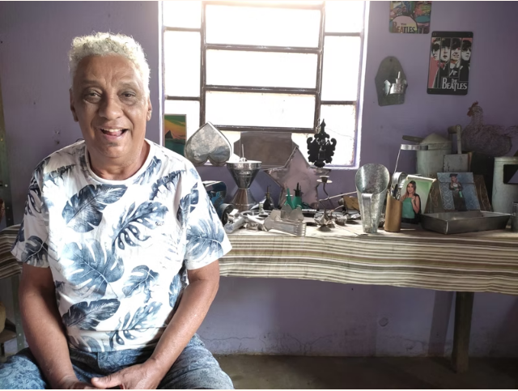
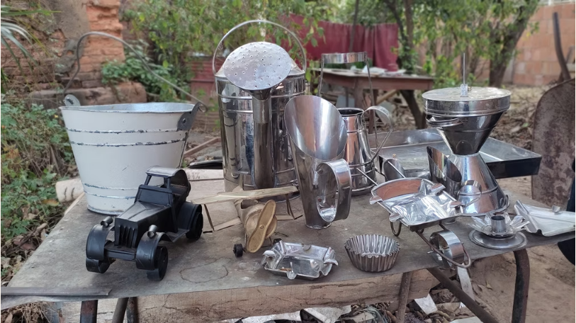
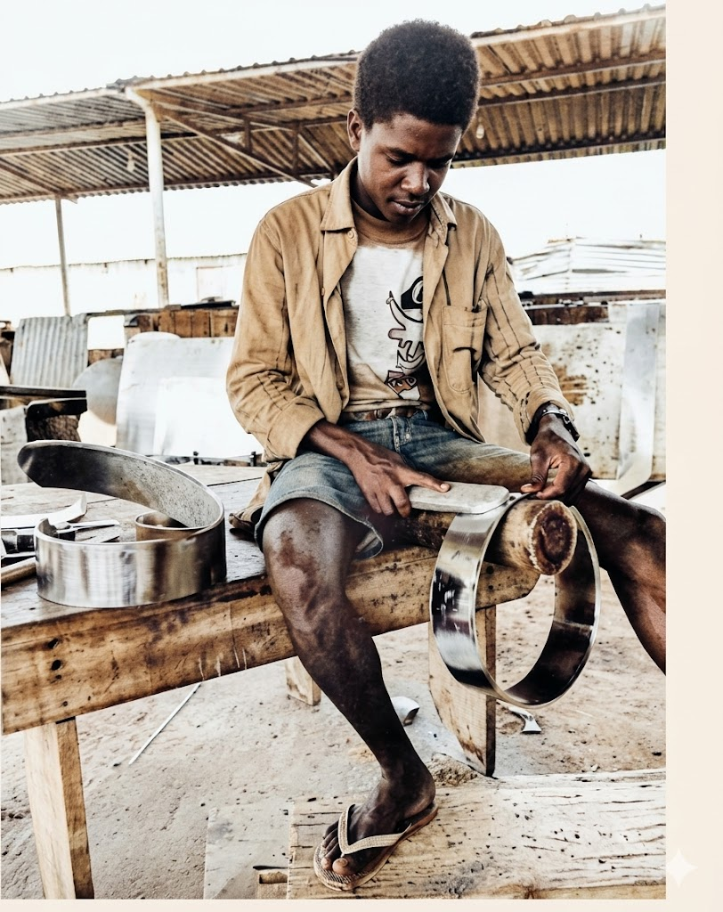
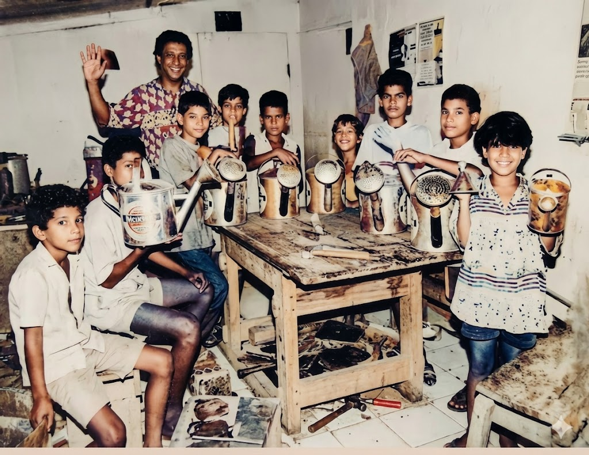
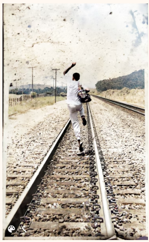

Daniel - Artesão Funileiro
Daniel Sampaio Celestino nasceu no bairro Nossa Senhora Aparecida, em Pirapora – MG, no ano de 1954. É artesão autônomo e reside ainda na comunidade em que cresceu, onde também mantém a sua oficina.
A história de Daniel com o ofício de funilaria começa aos 12 anos, quando o pai lhe pediu que ajudasse um funileiro baiano, morador do bairro Lagoa (Nossa Senhora Aparecida), conhecido como Mestre Otávio do Flandres – o nome vem em referência ao material utilizado inicialmente na confecção das peças, a folha de flandres.
O menino auxiliava o mestre, limpava a casa, apanhava água no chafariz e, em troca dos serviços, Otávio ensinou a ele o ofício de funileiro. Mestre Otávio, que tinha “uma tenda e máquinas manuais”, instruiu Daniel a confeccionar poucas peças: uma chuculatera, uma cuscuzeira e uma lamparina, mas isso bastou para que o garoto continuasse.
“Essa funilaria é uma arte que veio com os artesãos antes da evolução dos alumínios; deve ter pra mais de 100 anos”.
A partir daí, o aprendiz seguiu por conta própria, pois havia tomado gosto pelo ofício e, além disso, precisava de uma fonte de renda para ajudar em casa. A funilaria foi e é fonte de renda do artesão que hoje, aos 67 anos, está aposentado pelo INSS.
Daniel também foi professor. Nos anos 90, foi contratado pelas administrações das cidades de Betim e Ipatinga para ensinar a arte da funilaria para menores em situação de rua. Por isso, ficou fora de Pirapora por quase 10 anos. “Já fui professor (...) sou culturalista e já fui também militante”.
Em sua oficina, Daniel produz diversos itens: cuscuzeiras de aço inox, formas para bolos – de variadas formas – lamparinas, brinquedos e objetos decorativos. As peças são desenhadas, modeladas, cortadas e montadas pelo artesão, que usa folhas de aço para dar forma aos objetos:
“Só o que eu já fiz... são mais de 90 peças, isso aqui é igual música”.
O artesão destaca que, para produzir as peças, precisa comprar os retalhos de aço em outro município mineiro; o que encarece a produção e dificulta o processo. Na região, Daniel é o único artesão que mantém vivo o ofício de funileiro: “diz o pessoal que só eu aqui na beira do rio das Gerais é que faço isso”.
Pela falta de incentivo e aprendizes, o artesão teme que seja o último funileiro em Pirapora. Mesmo diante das dificuldades, o artesão segue firme, produzindo e vendendo suas peças e deseja ter alguém a quem possa ensinar o ofício.
“Nunca pensei em desistir. Vou morrer fazendo isso”.




